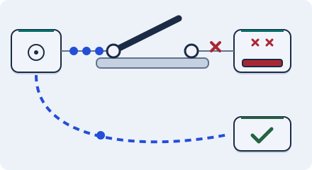

Stay up · 3 minutes
Timeouts and failing fast
When a dependency is slow, give up early so your servers do not pile up waiting.
Open this lesson
A slow friend is worse than a dead one
A dead service fails fast. A slow one holds your servers waiting until they have no room for anything else. Set a timeout so you stop waiting after a short time, and add a circuit breaker that stops calling a failing service for a while and answers from a fallback.
Open, closed, half open
Closed calls go through. Repeated failures open the breaker; one probe after a cooldown tests whether it can close again.
Try the idea
The map service has become slow and is dragging everything down. Add a timeout and a circuit breaker.
Key numbers
- Default wait on many systems
- ≈ 30 s. far too long, approx.
- A good timeout
- ≈ 3x normal p99. for example 300 ms if p99 is 100 ms
- Breaker stays open
- ≈ 30 s. approx.
Check your reasoning
Think through these questions before opening the lesson. In the game you can test the idea and compare your reasoning.
- Why is a slow service worse than a dead one?
- What does an open breaker do?
- A timeout of 30 seconds on a 100 ms service is:
The key point
Wait briefly, stop calling what is failing, and have a fallback.
Practise this idea
- Medium
Checkout payments
Online shops send you their customers at the moment they pay. You call a card processor, record the order and answer in a couple of seconds. When the processor is slow or down, shoppers refresh and tap Pay again.
- Medium
Buy now, pay later
At checkout a shopper picks "pay in four". You score the shopper in a few seconds, then charge the first quarter on their card. The card network sometimes asks you to slow down, and when apps retry, the retries make it worse.
- Hard
Real-time fraud detection
Every card payment asks your system "is this fraud?" and wants the answer within about 150 milliseconds. Each check looks up the cardholder's recent habits and runs a model. The holiday shopping rush doubles the volume, and a bad model update can start declining honest customers.
- Medium
Food delivery
You run food delivery in a few big cities. People browse menus, pay for an order, and watch a courier move on a map. Dinner time is brutal, and the payment company sometimes slows down. Nobody may be charged twice, and no paid order may vanish.